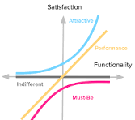

Designed for Comfort, Safety, and Restful Sleep
Existing sleep masks and noise-canceling earbuds are often bulky, rigid, or ill-fitting, causing discomfort, especially for side sleepers. Traditional earbuds can put pressure on the ears, while standard sleep masks may not stay in place throughout the night. There is a need for a lightweight, flexible sleep mask with integrated noise-canceling Bluetooth earbuds and a heart rate monitor that detects sleep onset and gradually lowers music volume, ensuring a comfortable and uninterrupted sleep experience.
The Kano Model is an advanced version of the sleeping mask, designed with cutting-edge technology to enhance user comfort and functionality. It incorporates the following features:
The Kano Model helps visualize the relationship between product features and user satisfaction, highlighting areas for improvement and innovation.
